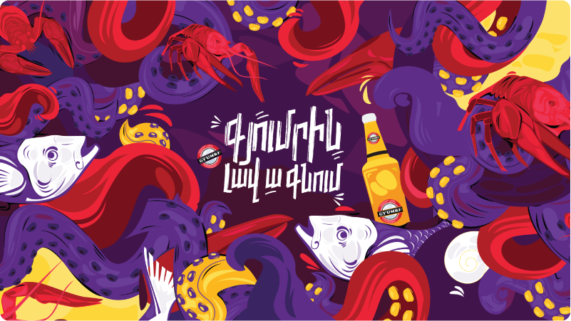
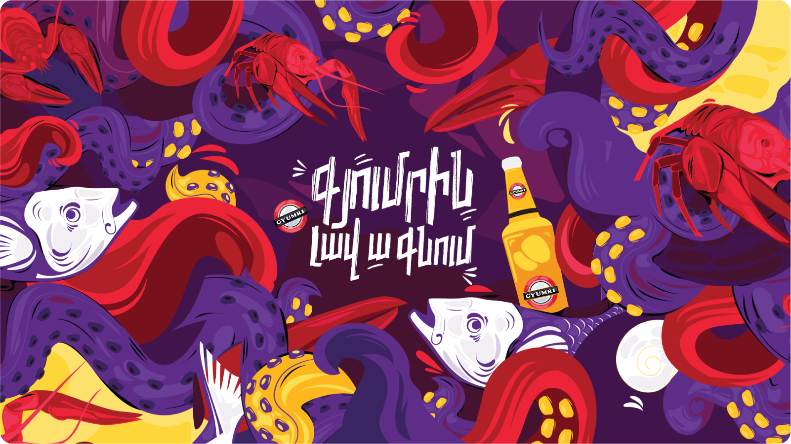

<div class="container-fluid general">
  <div class="row" #iframe>
    <div class="case-description">
      <p class="page-header">Car Branding for Gyumri Beer</p>
    </div>

    <div *ngIf="screenSize < 992" class="banner w-100">
      
    </div>

    <div class="case-info">
      <ul>
        <li>
          <div class="info-header">Brand</div>
          <div class="info-content">Gyumri Beer</div>
        </li>
        <li>
          <div class="info-header">Date</div>
          <div class="info-content">2019</div>
        </li>

        <li>
          <div class="info-header">Industry</div>
          <div class="info-content">Alcoholic Drinks</div>
        </li>
        <li>
          <div class="info-header">Medium</div>
          <div class="info-content">Vehicle</div>
        </li>
      </ul>
    </div>
    <div *ngIf="screenSize >= 992" class="banner w-100">
      
    </div>


    <mat-tab-group class="w-100">
      <mat-tab label="Brief">
        <div>
          <p #brief class="content-text mb-0">
            Established in 1970, Gyumri Beer is one of the oldest beer producers in Armenia. While the brand is well
            recognized among the older generation, it needed to get the attention of Generation Z.
            <br><br>
            In 2019, when Gyumri added 40 new distribution vehicles to its fleet, the brand decided to use this
            opportunity to connect with a younger audience.
            <br><br>
            Our goal was to create a new, eye-catching look for the Gyumri Beer distribution cars, one that would be
            attractive for the new generation of Gyumri drinkers.

          </p>
        </div>
      </mat-tab>
      <mat-tab label="Idea">
        <div [style.height]="briefHeight">
          <p class="content-text mb-0">
            Gyumri goes well
            <br><br>
            The phrase is inspired by a very local insight. In Armenia, when we say about beer that “it goes well”, we
            mean “it’s a good, easy-to-drink, pleasant beer”. We also often use phrases like “the beer goes well with
            nuts/crayfish/jerky”.
            <br><br>
            We use the same phrase when talking about cars. The car goes well means it’s a good car.
          </p>
        </div>

      </mat-tab>
      <mat-tab label="Execution">
        <p [style.height]="briefHeight" class="content-text mb-0">
          The vibrant illustration features everything that goes well with Gyumri Beer: cool people, crazy atmosphere,
          fun mood and, of course, crayfish.
        </p>
      </mat-tab>
    </mat-tab-group>

    <div class="banners w-100" id="countingSM" *ngIf="screenSize <= 992; else web">
      <div class="other-row" *ngFor="let asset of mobileAssets">
        
      </div>
    </div>

    <ng-template #web>
      <div class="banners w-100">
        <div class="other-row" *ngFor="let asset of webAssets; let i = index">
          
          <div *ngIf="i == 4" class="horizontal-elems d-flex">
            <div class="left-pic">
              
            </div>
            <div class="right-pic">
              
            </div>
          </div>
        </div>

      </div>
    </ng-template>
    <div class="case-video w-100" [style.height.px]="videoHeight">
      <iframe [width]="videoWidth" [height]="videoHeight"
              src="https://www.youtube.com/embed/1XD1lzN4WW8" frameborder="0"
              allow="accelerometer; autoplay; encrypted-media; gyroscope; picture-in-picture" allowfullscreen></iframe>
    </div>


    <div id="countingLG" *ngIf="screenSize > 600" class="w-100">
      <div>
        <div class="w-100">
          <p class="content-heading">outcome</p>
        </div>
        <div class="w-100 outcome-text">
          <p class="content-text mb-0">
            The new Gyumri cars are some of the liveliest, most noticeable and memorable branded cars in the country,
            which brings much needed fun and color to gray-dominated streets of Armenia.
            Inspired by the overwhelmingly positive reception of the new vehicles, Gyumri decided to change its overall
            look, feel and tone of voice in order to leverage the younger generation’s newly acquired interest in the
            brand.
          </p>
        </div>
      </div>
    </div>


    <div>
      <p class="content-heading">other-works</p>
      <div class="other-works">
        <div *ngFor="let work of otherWorks"
             [ngClass]="work?.type === 'bigBanner' ? 'other-left-banner' : 'other-right-banner'"
             (click)="navigateTo(work?.routerLink)"
        >
          
          <p [innerHTML]="work?.companyName" class="pic-header"></p>
          <p [innerHTML]="work?.projectName" class="sub-pic-header"></p>
        </div>
      </div>
    </div>
  </div>
</div>
